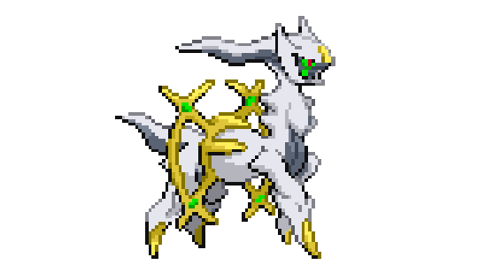
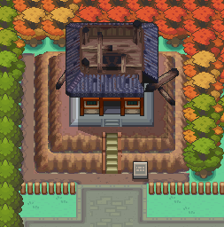
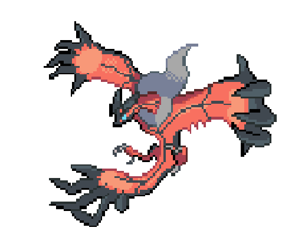

Diz-se em muitas lendas de Sinnoh que o universo, incluindo o mundo Pokémon, foi criado por um único Pokémon, Arceus. Em um vazio de nada, um único ovo surgiu, que então eclodiu em Arceus. Arceus criou Dialga, Palkia e Giratina e deu à Dialga e Palkia as habilidades de controlar o tempo e o espaço. Giratina foi banido para outra dimensão por sua conduta. Então, durante a formação muito precoce do mundo, possivelmente mais cedo, Arceus cria Azelf, Uxie e Mesprit para criar força de vontade, conhecimento e emoção, respectivamente, atributos que estão em todos os humanos e Pokémon modernos. Após a formação da região de Sinnoh, eles mergulharam no fundo do atual Lake Valor, Lake Acuity e Lake Verity, respectivamente, apelidando o termo "os guardiões do lago". Também nestes tempos iniciais, Mew apareceu no planeta, contendo o DNA de cada Pokémon. Existem muitos cientistas que acreditam que Mew foi o ancestral de todos os Pokémon.
Os próximos a surgir durante a era primal são Primal Groudon, Primal Kyogre e Rayquaza. Especulou-se que Primal Groudon foi formado nas profundezas da terra a partir de magma e Primal Kyogre foi formado pela pressão nas fossas do mar profundo, enquanto Rayquaza foi formado pelos minerais da camada de ozônio. Existe outra teoria de que os três já existiam antes dos oceanos, das terras e da camada de ozônio, e passaram a criar esses componentes do planeta. Rayquaza passou a voar na camada de ozônio, ocasionalmente parando no Sky Pillar. Primal Groudon e Primal Kyogre prosseguiram para criar massa de terra e encher o mar, respectivamente. Um encontro casual transformou os dois em rivais, e então começou um conflito pelo domínio do mundo Pokémon. Primal Groudon e Primal Kyogre também lutaram pela entrada da natureza que transbordava na época. Esses confrontos intermináveis continuaram até que Mega Rayquaza o reprimisse, fazendo com que Primal Groudon e Primal Kyogre se retirassem para cavernas especiais, onde descansavam, perdendo suas formas Primal algum tempo depois de dormirem. Os Orbes Vermelho e Azul são criados para evitar o despertar de Groudon e Kyogre, e para desencadear a Reversão Primal quando Groudon e Kyogre são despertados pelos orbes representantes. Os Red e Blue Orbs são deixados em Mt. Pyre por segurança.
At this time, Mew may have been plentiful and lived in large numbers. Landmasses such as Mount Coronet are created, and Regigigas moves the continents, forming various regions. The Sinnoh region is created around Mount Coronet. During this violent procedure, Stark Mountain is created and Heatran is formed in lava. Arceus creates the Adamant, Lustrous and Griseous Orbs before falling into a never-ending sleep.
Many years after, the prehistoric era begins and the first prehistoric Pokémon come into being. Scientists have proven that prehistoric Pokémon roamed the land, as Fossils and other archaeological remains have been found to contain the DNA of Pokémon. It is possible that the Mew population on the planet may have decreased at this stage, as they slowly gave way to other Pokémon species. Evolution has come, separating humans from Pokémon, to create the first humans.
During the Stone, Ice, and Iron Ages, the Legendary titans are created, and used as keys to seal away Regigigas in the Snowpoint Temple. Regirock, Regice and Registeel are hidden in caves and ruins around the Hoenn region.
20,000 years before the modern day, a meteorite crashes into the planet. Thousands of years later, Eternatus emerges from it, bringing about the cataclysmic event known as the Darkest Day and introducing the world to the concept of Dynamaxing. The legendary heroes Zacian and Zamazenta, accompanied by twin human brothers, rise up and defeat Eternatus, causing it to fall into an inactive state. Pieces of Eternatus, known as Wishing Stars, scatter around the land. In modern times, the power of Wishing Stars is harnessed through Dynamax Bands, allowing humans to control the phenomenon.
1,500 years before modern times, the earliest known system for writing is developed and used at the Ruins of Alph, Tanoby Ruins, and Solaceon Ruins. Archaeologists are currently unsure whether the nearly identical Unown preceded or succeeded the writing system, but it is assumed they share some sort of connection. At this point, the Magikarp population mutated and became weaker.
In recent history, 700 years before modern times, the Bell Tower and the Brass Tower were constructed. These two nine-tier towers were built opposite each other in Ecruteak City. The towers were built to foster friendship and hope between Pokémon and people. The view from the top of the towers was said to be "magnificent". In the west was Brass Tower, which was said to awaken Pokémon, and in the east was the Bell Tower, where Pokémon were said to rest. At the time, an immense silver-colored Pokémon, was said to make its roost atop the Brass Tower, while its counterpart, the glorious rainbow-colored Ho-Oh was said to rest at the Bell Tower. However, around 150 years before the games, a lightning bolt struck the Brass Tower. It was engulfed in flames that raged for 3 days. Lugia and Ho-Oh escaped to the skies unharmed. A sudden downpour put an end to the blaze. In-game lore states that three Pokémon died in the fire, but Ho-Oh was able to revive them as the Legendary beasts, Raikou, Entei, and Suicune. Legends and folklore state that Raikou symbolizes the lightning bolt that struck the tower, Entei symbolizes the flames that raged for three days, and Suicune symbolizes the sudden downpour that extinguished the flames. Around this time, the first Pokémon League competitions started to take place. In the 1990s, a Pokémon was created by scientific engineering for the first time, called Porygon.
In contemporary history, some years prior to the date, Mewtwo is cloned from Mew, and later escapes and destroys Cinnabar Island's Pokémon Mansion. Soon after, an erupting volcano on Cinnabar Island causes the destruction of many areas on the island. Around this time, the Team Rocket syndicate, under the leadership of Giovanni, spreads its control over various areas of the Kanto region until Red defeats Giovanni, prompting him to disband the organization and pursue a life of training. Despite this, Team Rocket operations continue for a little while longer on the Sevii Islands and in the Johto region. Sometime around the end of Team Rocket's operations, Red climbs and waits at the summit of Mt. Silver. Along with that, the leaders of Team Aqua and Team Magma reawaken Groudon and Kyogre and they continue their great battle, only to be stopped again by Rayquaza. Groudon and Kyogre retreat to the region of Fiore to rest after their battle.
In modern history, the Sinnoh region has become unusually colder, due to the strange circumstances occurring across the region. The Legendary trio of Sinnoh are also awoken by a villainous team; Team Galactic uses a Red Chain forged from the lake guardians to summon Dialga, Palkia, and Giratina. Their efforts are halted due to interference from the player. At this time, a rip in time-space has occurred, opening a portal to the Distortion World. Giratina escapes into its dimension along with Cyrus, the Team Galactic leader. The entrance to the Distortion World closes, returning the Sinnoh region back to normal.
Some years after this, Team Plasma attempts to free Pokémon from human capture, but for selfish reasons. Reshiram and Zekrom are awoken due to Team Plasma and the player. The player, siding with one of the two dragons, battles against N to test if N's convictions are correct. After this, the player defeats Ghetsis, and N leaves to a distant land with his dragon, while the player keeps theirs. Two years later, Team Plasma returns, but with the intention to take over Unova. Kyurem is captured by Ghetsis, and fused with N's dragon (either ZekromB2 or ReshiramW2) to form Black Kyurem or White Kyurem respectively. The player defeats the new dragon, and Team Plasma is disbanded for good as Ghetsis suffers a mental breakdown and becomes unable to do any more evil deeds as a result.
Concurrently with Team Plasma's return, in Kalos, Team Flare tries to destroy the world and make a more beautiful one with the help of XerneasX or YveltalY. The player, along with Shauna and Serena/Calem, save XerneasX or YveltalY. Lysandre then uses the last bit of energy the ultimate weapon has, and ends up destroying both the weapon and the Team Flare Secret HQ. Lysandre is not seen again.
In the Galar region, Rose, the president of Macro Cosmos and the chairman of the Galar Pokémon League, foresees the region running out of energy in a thousand years. In his misguided vision to fix this problem, he reawakens Eternatus and brings about the second Darkest Day. The player, along with Hop, stands up against Eternatus in Hammerlocke and summons Zacian and Zamazenta to defeat the threat once more. Rose subsequently turns himself in and is arrested.
©PokLax - 2022
Pokémon and All Respective Names are Trademark & © of Nintendo 1996-2022